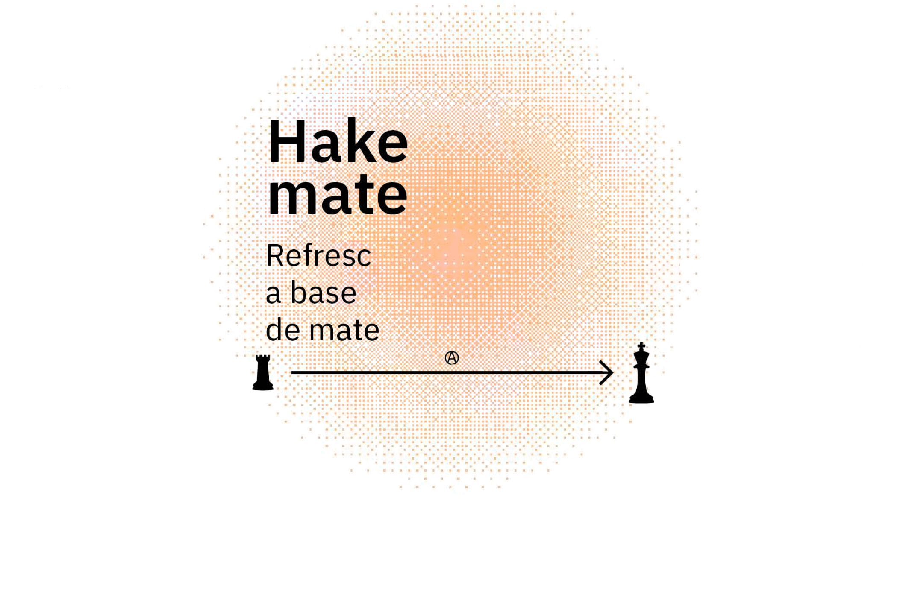
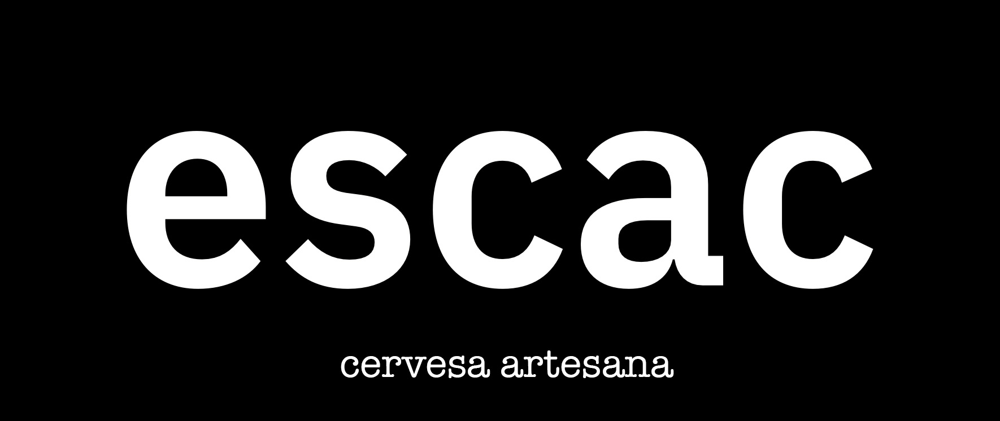

Bienvenidxs a PartxeBrew!
PartxeBrew te invita a explorar un mundo de sabores innovadores con nuestras cervezas y bebidas carbonatadas inspiradas en la hierba mate. Desde nuestra sede en Barcelona, nació en 2016 el proyecto Hakemate, una iniciativa cooperativa dedicada a ofrecer productos únicos y refrescantes.
HakeMate:
Clicka para ver los productos
Refresca tu Día con la Esencia de la Hierba Mate
HakeMate es una línea de bebidas carbonatadas innovadoras que celebran la rica tradición de la hierba mate con un toque moderno y refrescante. Nuestro proyecto, nacido en el corazón de Barcelona en 2016, es el fruto del trabajo colaborativo y la pasión de tres personas dedicadas a crear un producto único y de alta calidad. HakeMate surgió de la visión compartida de tres amigos apasionados por la hierba mate y el deseo de ofrecer una alternativa refrescante y saludable en el mercado de bebidas. Inspirados por la cultura del mate, decidimos crear una bebida que no solo capturara su esencia tradicional, sino que también ofreciera nuevas y emocionantes combinaciones de sabores.
Nuestros Sabores
Cada una de nuestras variedades de HakeMate está cuidadosamente elaborada para brindar una experiencia única y revitalizante.
Sabor original de HakeMate
Este es nuestro sabor insignia, que captura la esencia pura y auténtica de la hierba mate. Ideal para los puristas y aquellos que buscan una conexión directa con la tradición.

HakeMate con Jengibre
Para los aventureros del paladar, esta variante ofrece una mezcla vibrante de hierba mate con el picante sutil del jengibre. Es la elección perfecta para quienes buscan una bebida energizante y con carácter.

HakeMate con Menta y Limón
Esta mezcla refrescante combina la frescura de la menta con el toque cítrico y revitalizante del limón. Es la opción ideal para los días calurosos y para aquellos que prefieren un sabor más ligero y refrescante.

Beneficios de la Hierba Mate
La hierba mate es conocida por sus numerosos beneficios para la salud. Rica en antioxidantes y nutrientes, es una fuente natural de energía que mejora la concentración y la claridad mental sin los efectos negativos de otras bebidas estimulantes. Además, su consumo promueve la digestión y tiene propiedades antiinflamatorias, lo que la convierte en una opción saludable y deliciosa para todos.
Únete a la Revolución Hackemate
Te invitamos a descubrir Hackemate y a unirte a nuestra comunidad de amantes de la hierba mate. Cada botella de Hackemate es una celebración de la tradición, la innovación y el espíritu cooperativo. Ya sea que prefieras la pureza del sabor original, la chispa del jengibre o la frescura de la menta y el limón, en Hackemate encontrarás una opción que se adapta a tus gustos y necesidades.

HakeMate - una bebida con historia, sabor y propósito.
Escac:
Clicka para ver los productos
La Cerveza Artesanal de PartxeBrew
Escac es nuestra distinguida línea de cervezas artesanales, elaboradas con esmero y dedicación por PartxeBrew. Este proyecto es una celebración de la tradición cervecera y la innovación, ofreciendo una variedad de estilos que deleitan los paladares más exigentes. Aunque nuestro enfoque en Hackemate se centra en la hierba mate, Escac representa nuestra pasión por la cerveza en su forma más pura.
Variedades de Escac
En Escac, hemos desarrollado una gama diversa de cervezas que capturan la esencia de distintos estilos y sabores. Entre nuestras creaciones más destacadas se encuentran:
Session IPA
Una versión más ligera de la IPA clásica, con un contenido de alcohol moderado pero con el mismo perfil de lúpulo aromático y cítrico. Ideal para disfrutar de varias sin perder el equilibrio.

American Pale Ale
Una cerveza de cuerpo medio con un equilibrio perfecto entre malta y lúpulo. Presenta notas cítricas y frutales con un final limpio y refrescante.

Doble IPA
Una India Pale Ale robusta y con mayor contenido de alcohol. Esta cerveza es intensa en sabor y aroma, con notas fuertes de lúpulo que la hacen una delicia para los aficionados a las cervezas más potentes.

Pale Ale
Una clásica y versátil Pale Ale con un balance armonioso entre el dulzor de la malta y el amargor del lúpulo. Su sabor suave y agradable la convierte en una elección popular para cualquier ocasión.

Belgian Brune
Una cerveza oscura belga, rica y compleja, con notas de caramelo, especias y un toque de frutas oscuras. Perfecta para quienes disfrutan de cervezas con profundidad de sabor y carácter.

Bienvenidos a Escac
Es donde la tradición cervecera se encuentra con la innovación y la pasión por la excelencia. Te invitamos a sumergirte en el mundo de Escac y explorar la diversidad de sabores que ofrecemos. Ya sea que prefieras una cerveza ligera y refrescante o una IPA intensa y aromática, en Escac encontrarás una cerveza que se adapte a tus gustos y ocasiones.